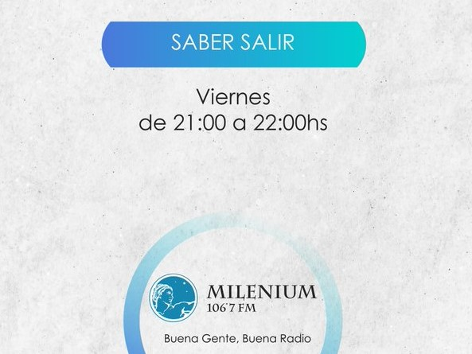
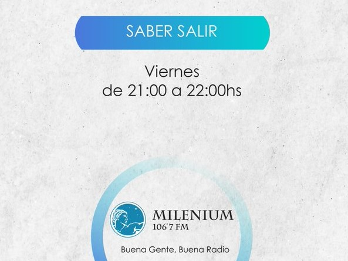

Ancas de rana, ¿manjar o despojo?
Opinan los expertos.

La rana es el batracio más conocido. Uno está acostumbrado a verla al borde de charcas y lagunas, pero no sobre un plato. ¿Sobre un plato? A más de uno la mera idea de comerla le produciría repugnancia. Pero en algunos restaurantes estos anfibios son considerados una exquisitez, a pesar de que en su origen empezaron a comerse por necesidad antes la escasez de una fuente alternativa de proteínas; por algo se lo llamaba “el pescado de los pobres” A fin de cuentas, ¿quién va a comer caracoles o ranas pudiendo acceder a un buen corte de carne vacuna? A pesar de ello, según el investigador gastronómico Harald Irnberger, en algunas culturas como la china y la azteca eran consideradas un manjar. En España y parte de Francia también se consumen con regularidad, en especial las ancas o patas, plato rural que suele prepararse con una salsa suave de tomate, ajo, perejil y otras hortalizas. Años atrás se practicaba la caza de ranas silvestres, pero la polución y la reglamentación bromatológica hacen que este tipo de animales silvestres no sean recomendables para consumo humano. Por eso es que se han desarrollado criaderos donde se practica la ranicultura con fines comerciales. Los principales criaderos del mundo están en Tailandia, desde donde se exportan ranas a buena parte del orbe. Hasta hace un tiempo atrás se podían probar las ancas de rana en Restó (Sociedad Central de Arquitectos), donde Guido Tassi y Magui Piaggio las preparaba a la sartén con una rouille (salsa clásica del Sur de Francia con ajo y azafrán en hebras), pero actualmente sólo se pueden comer en Rotisería Miramar, donde las sirven a la provenzal (salteadas con perejil y ajo), acompañadas con una guarnición de papas.
 
